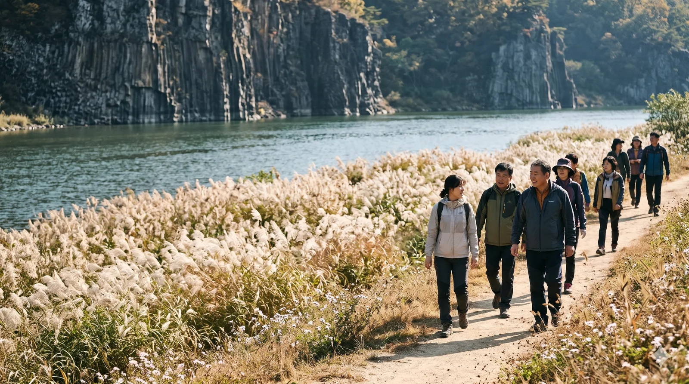
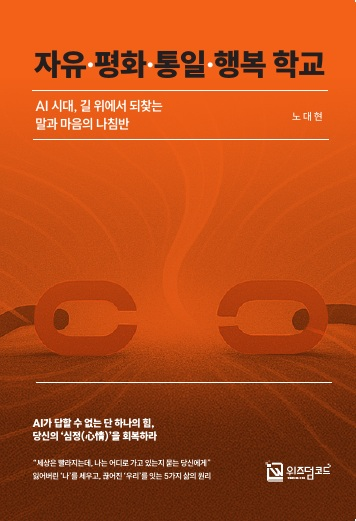

자유
FREEDOM
스스로 말미암는 삶
남이 정한 답을 따르기 전에 나의 기준을 묻습니다. 선택과 책임을 통해 자기 삶의 주인으로 섭니다.
연천에서 시작하는 삶의 배움
내가 발견하고, 선택하고, 일구는 삶.
연천의 숲과 길에서 나를 돌아보고,
서로의 이야기를 나누며 삶의 가치를 길어 올립니다.
나의 작은 실천을 이웃과 연결하며 보람과 행복을 만납니다.
‘삶의 임자’는 자신의 삶을 스스로 선택하고 가꾸는 사람입니다. 내 삶의 나침반을 살피며 그 첫걸음을 찾아봅니다.

이런 마음으로 오셔도 좋습니다
내 경험에서 의미를 찾고,
나다운 선택을 하고 싶어요.
혼자서는 머뭇거렸던 일을 함께 시작하고, 내가 일구어 낸 보람과 행복을 느끼고 싶어요. 나의 관심사를 넘어 이웃과 지역의 이야기를 만나고, 누군가에게 도움이 되는 작은 일에도 참여하고 싶어요.
몸과 감각을 깨우고, 말과 느낌을 살피며, 서로의 이야기를 듣습니다. 이미 내 안에 있는 경험과 가능성을 만나 삶을 주도적으로 가꾸는 힘을 찾아갑니다.
혼자 오셔도 괜찮습니다. 듣는 것부터 시작해도 좋습니다.
각자의 속도와 말하지 않을 자유도 존중합니다.
02 / OUR COMPASS
거창한 구호에서 오늘의 언어로.
나를 세우고, 서로를 잇고, 함께 살아가는 힘을 배웁니다.
FREEDOM
남이 정한 답을 따르기 전에 나의 기준을 묻습니다. 선택과 책임을 통해 자기 삶의 주인으로 섭니다.
PEACE
다름을 지우기보다 서로의 말을 듣습니다. 일상의 대화에서 존중과 조화의 가능성을 찾아갑니다.
CONNECTION
내 안의 갈등과 우리 사이의 경계를 돌아봅니다. 서로를 살리는 연결에서 공존의 길을 찾습니다.
FLOURISHING
삶의 어려움을 살아내는 힘과 함께 나누는 기쁨을 생각합니다. 감사와 작은 실천으로 배움을 이어갑니다.
길 위의 학교 · 로고송소리와 함께 만나는 학교
03 / THE WAY WE LEARN
묻고, 따지고, 풀어내는 ‘묻따풀’.
자기 언어로 생각하고, 삶에서 확인하는 배움입니다.
익숙하게 쓰던 말의 바탕을 묻고, 삶의 의미를 새롭게 이해합니다.
함께 걷고 대화하며, 알게 된 것을 몸과 마음으로 경험합니다.
일상으로 돌아와 작은 실천을 이어가며, 배움이 삶에 스며들게 합니다.
EDUCATION PROGRAMS
말 · 느낌 · 몸과 감각 · 대화 · 자연과 장소
자유·평화·통일·행복을 삶으로 이어갑니다.
말의 바탕을 살피고, 몸과 느낌에 귀 기울이며, 서로의 이야기를 듣습니다. 숲과 연천 DMZ의 길에서 사람과 자연의 연결을 경험하고, 자유·평화·통일·행복의 가치를 내 삶의 언어와 실천으로 일구어 갑니다.
길 위의 학교는 참여자 한 사람 한 사람에게 자기 삶을 이해하고 선택할 경험과 지혜, 가능성이 있다고 믿습니다.
진행자는 열린 질문과 경청으로 말문을 열고, 각자가 자신의 경험과 느낌을 표현할 수 있도록 돕습니다. 참여자는 이야기를 나누고, 자신에게 남는 의미를 정리하고 음미하며, 자기 삶에 맞는 답과 실천을 만들어 갑니다.
“무엇을 배웠다”는 뿌듯함에서,
“내가 발견하고 선택하여 일구어 냈다”는
성취감과 보람으로.
홀로 있는 순간에도 사람·자연·장소·시간과 연결되어 살아갑니다. 나를 지탱하는 관계를 발견하고, 서로의 다름과 속도를 존중하며, 편안함과 안정감·소속감을 경험할 수 있는 배움의 자리를 만듭니다.
말할 자유와 함께 말하지 않을 자유, 적절한 거리, 잠시 머무를 시간도 존중합니다. 서로의 이야기를 만나며 자신의 답을 새롭게 만들어 갈 수 있습니다.
내가 사용하는 말의 뜻과 바탕을 살피고, 자신의 경험을 자기 말로 표현합니다.
늧·느낌·감정·인식·행동의 흐름을 살피며, 지금 내 안에서 일어나는 것을 알아차립니다.
호흡·움직임·몸의 감각을 느끼고, 여건에 맞는 맨발 걷기와 브레인트레이닝을 경험합니다.
이마고 대화와 회복적 대화를 통해 끝까지 듣기, 공감, 서로의 필요를 나누는 경험을 합니다.
숲·물길·생태·역사의 현장을 만나고, 그 경험에서 자신의 삶과 연결되는 의미를 발견합니다.
나의 나침반 선언과 작은 실천을 선택하고, 오정법 트래커로 기록하며 돌아봅니다.
사물과 장소를 만나며 일어나는 느낌에 머물고, 내 삶과 관계의 연결을 발견합니다. 매번 같은 답에 도달하기보다 각자가 발견한 답을 서로의 이야기와 만나게 하는 과정입니다.
하나의 질문과 장소를 중심으로 감각 깨우기·대화·성찰을 경험하고, 일상에서 해 볼 작은 실천을 선택합니다.
나를 알아차리고 서로의 이야기를 듣는 입문 과정입니다. 말·느낌·관계·실천을 연결하며 나의 첫 나침반을 세워 봅니다.
자유·평화·통일·행복을 몸과 감각, 대화와 장소 경험으로 탐구하고, 자신의 삶의 방향과 실천을 구체화합니다.
경험과 성찰을 반복하며 배움을 깊게 합니다. 일상에서 실천하고 다시 만나 나누며, 관계와 삶의 변화를 살펴봅니다.
정기적인 만남과 대화, 자료 읽기, 일상 실천과 돌아보기를 통해 배움을 지속하는 공동체 과정입니다.
삶을 돌아보는 질문과 짧은 읽을거리, 작은 실천 제안을 받아 자신의 속도로 이어 갑니다.
개인·모임·학교·기관·지역공동체의 관심과 필요를 듣고, 대상·시간·장소에 맞춰 함께 구성합니다.
멤버십: 일반회원 입학금 1,000원, 정회원 첫해 합계 10,000원(입학금·연회비 포함)입니다. 교육과정별 참가비와 뉴스레터의 제공 주기·내용·유료 여부는 해당 모집 안내를 확인해 주세요.
현재 삶 자각 · 삶의 리듬 살피기 · 관점 점검 · 감정과 신념 성찰 · 생애 경험 재해석 · 관계 재구성 · 가치 재선택 · 생활실천으로 이어지는 구성 예시입니다.
숲과 자연을 오감으로 만나며 현재의 삶을 자각합니다. 자기인식과 삶의 만족·의미를 살피고, 나를 지탱하는 관계와 삶의 방향을 돌아봅니다.
물의 흐름과 걷는 속도를 경험하며 자신의 리듬을 살핍니다. 몸·느낌·생각을 알아차리고 자율적 선택, 자기조절, 자기실현의 가능성을 찾아봅니다.
갈림길과 다른 길을 경험하며 선택의 기준을 묻습니다. 말의 바탕과 익숙한 관점을 살피고, 나의 선택이 타인과 자연에 미치는 영향을 돌아보며 가치와 행동을 연결합니다.
숲의 고요함과 호흡 속에서 감정과 신념을 돌아봅니다. 몸의 긴장을 알아차리고, 나를 안정시키는 환경과 관계를 발견하며 정서조절과 내적 통합을 살핍니다.
나무의 성장 흔적과 계절을 만나 자신의 경험을 되새깁니다. 이마고 대화와 회복적 질문으로 서로의 이야기를 들으며 존중과 공감, 평화적 의사소통과 갈등 전환을 경험합니다.
생태계의 상호의존성과 연천 DMZ의 경계를 살핍니다. 내 안과 우리 사이의 갈라짐을 돌아보고, 차이를 지우지 않고 함께 살아갈 약속과 공동체적 연대의 가능성을 찾아봅니다.
자연 속에서 머물고 선택하며 소중한 가치를 다시 발견합니다. 삶의 만족과 의미, 감사와 관계적 안녕, 기여와 보람을 나눕니다.
숲길 전체의 경험과 귀환을 정리하고 음미합니다. 네 가치를 자신의 언어로 통합해 삶의 방향을 세우고, 언제·어디서·어떻게 실천할지 선택합니다.
대상과 장소, 계절과 운영 여건, 참여자의 질문과 필요에 따라 활동과 순서를 조정합니다. 개별 주제의 체험 과정이나 연속 과정으로 구성할 수 있습니다.
오늘 내가 발견한 것은 …
내 말로 세워 본 삶의 방향은 …
내가 일구어 보고 싶은 작은 실천은 …
주민·학생·부모와 자녀·학교와 기관을 위한 과정 예시를 준비했습니다.
교육과정 예시·문의
내 이야기를 편안하게 꺼내고, 서로의 마음을 이해하며
함께할 힘을 찾는 시간을 제안합니다.
주민 모임부터 학생·부모와 자녀·학교와 기관까지,
서로를 잇고 자연을 돌보는 배움을 참여자의 상황에 맞춰 설계합니다.
NEWS & COMMUNITY
새로운 소식과 배움의 자료,
함께 걸어온 이야기를 카페에서 나눕니다.
SCHOOL NEWS
모집 안내와 일정, 길 위에서 이어지는 학교 활동을 만나 보세요.
학교 소식 보기 (네이버 카페, 새 창)LEARNING RESOURCES
함께 읽는 글과 질문, 배움과 실천을 돕는 자료를 나눕니다.
OUR STORIES
참여자가 발견하고 일구어 낸 변화와 배움의 이야기를 만나 보세요.
참여 후기 보기 (네이버 카페, 새 창)게시글 공개 범위에 따라 네이버 로그인이나 카페 가입이 필요할 수 있습니다. 소책자와 오정법 트래커는 위의 이메일 인증 페이지에서 이용해 주세요.
카카오톡 채널을 추가하시면 학교가 전하는 새 글과 활동 소식을 받아 보실 수 있어요.
카카오톡 채널 추가하기함께 질문을 여는 사람
노대현
『자유·평화·통일·행복 학교』 저자
DMZ 길 위의 학교 운영자
오랜 교육 현장에서 말의 바탕이 흔들릴 때 불안과 갈등이 커지는 모습을 보았습니다. 그래서 가장 아픈 땅에서 가장 깊은 배움이 시작될 수 있다고 믿으며 ‘DMZ 길 위의 학교’를 열었습니다.
진행자는 답을 대신 정하기보다 참여자가 자기 삶에 맞는 답과 실천을 만들어 가도록 질문과 경청으로 함께합니다.
참여자의 이야기 만나기참여 후기는 카페 게시판에서 확인하실 수 있습니다. 게시글의 공개 범위에 따라 네이버 로그인 또는 카페 가입이 필요할 수 있습니다.
이메일 rk9311@naver.com
이메일 버튼은 기기에 설정된 메일 앱을 엽니다. 연결되지 않으면 위 주소를 복사해 사용하시는 메일에서 보내 주세요.
OUR LONG-TERM VISION
Demilitarized Zone에서 Dream Maker Zone으로.
분단의 기억을 마주하고, 대화로 서로를 만나며, 내 삶과 세상의 가능성을 만들어갑니다.
분단·경계·상처와 자연의 회복을 보고 느끼며, 자신의 경험과 연결합니다.
사람과 사람, 인간과 자연, 과거와 현재가 만나 서로의 이야기를 듣습니다.
길에서 얻은 의미를 나의 말로 표현하고, 스스로 선택한 작은 실천으로 옮깁니다.
연천배움터를 발상지이자 첫 모델로 삼아 교육과정, 활동지, 진행자 역량과 운영체계를 다집니다.
파주·연천·철원·화천·양구·인제·고성 등 지역마다 다른 역사와 생태를 하나의 배움 철학으로 잇고자 합니다.
마을, 생태전환 현장, 역사와 문화의 공간으로 넓혀 세대와 공동체의 만남을 지향합니다.
경계·상처·회복·공존의 장소를 세계의 Dream Maker Zone으로 연결하는 미래를 그립니다.
위 내용은 중장기 발전 방향입니다. 지역별 배움터 개설이나 국내외 협약이 완료되었다는 의미는 아닙니다.
교실이 있는 곳이 학교가 아니라,
배움이 일어나는 곳이 학교다.
04 / READ & REFLECT
한 권의 책, 하나의 질문에서
나만의 배움을 시작해 보세요.

우리의 배움을 담은 책자유·평화·통일·행복 학교
자유와 선택, 평화로운 관계, 공존의 실천, 함께 누리는 행복. 다섯 가지 주제를 통해 ‘알다·익히다·배다’로 이어지는 배움의 방향을 살펴봅니다.
이메일 인증 후 소책자 78쪽을 웹에서 읽어 보세요. PDF 원본 다운로드는 제공하지 않아요.
소책자 열람하기 이메일 인증참가 신청 버튼을 누르면 DMZ 길 위의 학교 신청서로 이동합니다. 안내와 개인정보 수집·이용 내용을 확인하고 신청해 주세요. 제출하면 접수 확인 메일이 갑니다. 안 보이면 스팸함을 확인해 주세요. 참가 확정 여부와 일정·장소·참가비는 운영자의 별도 안내를 확인해 주세요.
신청서 열기 ↗모집 중인 과정의 일정·장소·대상·참가비·준비물은 학교 소식에 연결된 모집 공지에서 확인해 주세요. 아직 공지가 없는 과정은 희망하는 내용을 카카오톡으로 문의해 주세요.
모집·일정 살펴보기소책자를 읽거나 ‘내 삶의 나침반 가벼운 진단’으로 나를 돌아보세요. 함께 나누고 싶은 질문 하나를 떠올리는 것도 좋은 시작입니다.
카카오톡 채널에서 학교 소식을 확인하세요. 챗봇 채팅창에 ‘메뉴’라고 입력하면 소책자·트래커·학교 활동 안내를 다시 볼 수 있습니다.
채널 채팅 열기 ↗교육과정 예시에서 내용을 살펴보고 상담 버튼을 눌러 주세요. 관심 과정과 대상, 원하는 시간을 남겨 주시면 운영자가 구성을 의논합니다. 학습역량 과정은 기존 삶의 나침반 설문과 구분하여 상담합니다.
교육과정 예시·문의진단 설문에 응답하면 입력한 이메일로 자동 피드백을 보내드립니다. 이메일 주소를 정확히 입력하고, 메일이 보이지 않으면 스팸함도 확인해 주세요. 내 삶의 나침반은 자신을 돌아보는 도구이며, 학습역량 과정의 개별 탐색 상담과는 구분됩니다.
YOUR NEXT CHAPTER STARTS HERE
조금 느리게 걷고, 조금 깊이 묻는 시간.
디엠지(DMZ) 길 위의 학교에서 만나요.
신청서의 모집·참여 안내를 확인하고 작성해 주세요. 참가 확정 여부는 운영자 안내를 확인해 주세요.